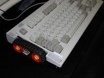

|
Input devices: a usage-driven approach
|
Pointers—self taught typists who hunt and peck
instead of touch-type—...are the least likely to be hurt
from their style.
Pascarelli & Quilter in
Repetitive
stress injury
|
From bitter experience, I don't believe that the keyboard
can be improved much. Three times, and without success, I
have built whole keyboards from scratch. Nevertheless,
there are a few changes I would like to see done to the
keyboard:
- A smaller footprint allowing more rest areas for hands
and a mousing area closer to the center of the body.
- Widely spaced modifier keys so they can be pressed by
the side of your hand instead of requiring pinky
contortions.
- Mouse buttons on the side so as to allow a buttonless
mouse.
- A scroll tread or belt on the side of keyboard to make
browsing possible without dependence on finger-skills. A
large scroll wheel might also be sufficient instead of the
more complicated thread mechanism.
- A numeric keypad that does not make the keyboard as
wide as normal 101-key models.
- A flat design, akin to that of a laptop keyboard, but
with 3mm key travel and good mechanical feed-back.
Why keyboards have gotten less ergonomic
For modifier keys, such as Ctrl and Shft,
ergonomicity has declined. When they are widely spaced
apart as on keyboards made in the mid '90s,
these keys can be depressed easily with the side of the hand
or with the outer side of the curled-up little finger, all
while the thumb is facing upwards. In
this way, the strenuous finger work usually associated with
chording is avoided. Unfortunately, modern keyboards suffer
from extraneous OS-specific keys that prevent this technique
from being used. (Except if these keys are uprooted or
lowered.) On a flat keyboard, such as on a notebook
computer, fingers are even further restrained by the
flatness from hitting keys in a variety of ways—something
that is likely an ergonomic drawback.
A keyboard layout proposal
A keyboard
layout following these ideas mentioned above is suggested in
Figure 1. Below it's shown (left) how a
large, comfortable belt may be placed on the left side of the
keyboard, along with mouse buttons; the side of the hand
(right), not the fingers, securely moves the belt.

These ideas and the figure below are from AT&T
Technical Disclosure A keyboard design by Nils Klarlund.
|
 printer-friendly version
printer-friendly version e-mail Klarlund
e-mail Klarlund Nils
Klarlund home
Nils
Klarlund home